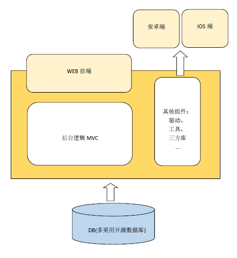
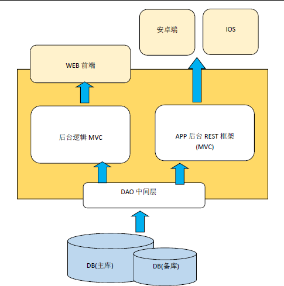
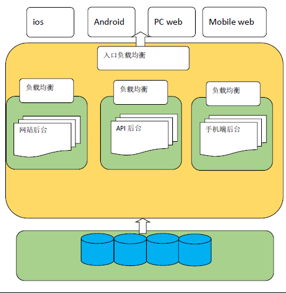

本文是在项目中对于架构的演变的一些心得感悟，可能在高手看来有些幼稚，不过确实是在实践的过程中和探索的过程中的个人心得。相信以后会对架构有更为丰富的认识。
--写在开头
团队初创时需要快速产出产品原型并上线，此时多采用敏捷或半敏捷 方式开发，保证产品本身能够正常运行并能支撑常规的并发访问即 可。因此此时的架构形式多为集中式架构

优点：集中式，便于管理，紧凑型应用，一个后台面向多个终端，不 必专门面向某一个终端进行开发。只需要在项目内部进行逻辑划分。 手工部署，更容易控制。
缺点：耦合程度过大，单数据库面向多终端，容易出现并发问题。 代码package 过多，长期发展之后不易管理。
单服务器，不容易做到持续集成和持续部署。
不支持热部署。
适合场景：
项目初期的短时间内。
当访问量到达一定瓶颈，此时单个数据库不足以支撑整个业务逻辑的 发展。
而且应用内部的耦合逻辑也在一定程度上阻碍了传输速度和运行效 率的发展，因此此时应当进行逻辑拆分。在业务上逐步促进业务逻辑 的解耦。

优点：使用主从库设置，进行读写分离，使得后台压力适度减少。 在业务层对后台中间的逻辑进行适度切分解耦了中间逻辑层。两端能 够适度公用DAO 中间层使得冗余代码得到减少。
缺点：虽然逻辑上已经有分层的体现，但是整个应用架构仍旧是集中 式的单机架构，中间层的分离已经能够抵挡部分的流量压力。但是仍 旧未能解决部署时候需要手动上下线的问题。
前一阶段的内部分层解决的瓶颈压力不能满足之后的流量压力的时 候。此时应当考虑对应用整体采用水平拆分的操作。
该阶段，后台基本接近完全的服务化，因此需要对WEB 前后端进行 完全的解耦，
优点：考虑到之前的应用上下线需要依靠手动的方式进行部署，因此 这个阶段可以采用应用的水平拆分，将多个等价应用并列部署，并在 入口位置采用负载均衡服务器，如Apache、Ningx。
通过负载均衡将 流量导向不同的服务器，这样使得服务器整体的抗并发能力提升。
而且在部署的时候能够分阶段分版本进行部署。
缺点：此种方式虽然能够大大的提升应用的抗并发能力及稳定性。
到 这个层次上，服务本身的解耦已经比第一阶段提高很多。
但是仍旧未 能充分使各个端之间达到更为深入的解耦。
上一阶段已经能够满足一定程度的并发访问请求，到该阶段，软件内 部的拆分包括优化起到的作用已经达到瓶颈，继续优化已经不足以看 到明显的效果，因此应该进行物理层面的扩充了。
所以引入这个阶段的架构演化，即垂直拆分，物理拆分。
具体而言就是后台剥离具体到业务逻辑，这个可以在之前做，也可以 在该阶段做。
剥离之后，分别以网页后台、手机APP 后台、手机端网页后台分别部 署为集群。而且集群之间应当互相分离，这是从硬件本身的性能所考 虑的。
到这里，数据库应当也已经以单独的服务器所部署了。数据库专门作 为一个单独的服务器供上层应用服务器远程调用。
也就是说，水平上，通过拆分应用分别在不同的服务器中进行集群部 署，垂直上，将数据存储，数据处理分别以不同的服务器部署。达到 垂直的分离。到这里，基本上的架构已经很庞大了。
需要继续完善的有，分布式日志系统，分布式消息队列，分布式集成 以及分阶段测试的演进。

一路下来，应用结构从集中式到水平拆分再到垂直拆分，从内部业务 拆分到物理结构拆分，业务架构从集中式的一站式应用走向了分布式 的应用架构。
总而言之，架构演变的关键，我的理解在于“拆分”+“解耦”
其中，拆分包括逻辑业务的拆分以及物理结构的拆分； 解耦包括业务结构及端与端之间的解耦。
最终，后台将走向服务化，从而使前后端之间的耦合度大大降低， 真正做到了前后端的分离。